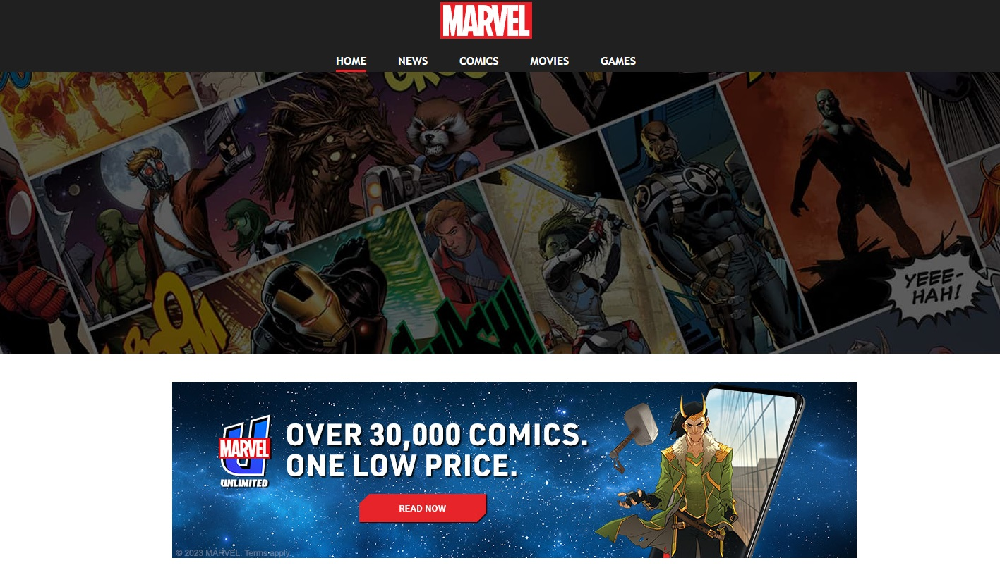

Challenge #37
EJS Template Injection
Votre mission est de récupérer le FLAG de validation en exploitant une vulnérabilité
connue (CVE).
Pour cela, vous devrez d’abord identifier l’endroit où cette faille peut être
déclenchée, puis l’utiliser afin d’accéder au fichier contenant le flag, situé dans le
répertoire racine de
l’application.
Aperçu:
Pour cela vous devez avoir les connaissances suivantes :
- Server Side Template Injection
Apprentissage
Documentations et Vidéos
 Information générique à la faille "Server Side Template Injection"
Information générique à la faille "Server Side Template Injection"
Connaissance CVE-2022-29078